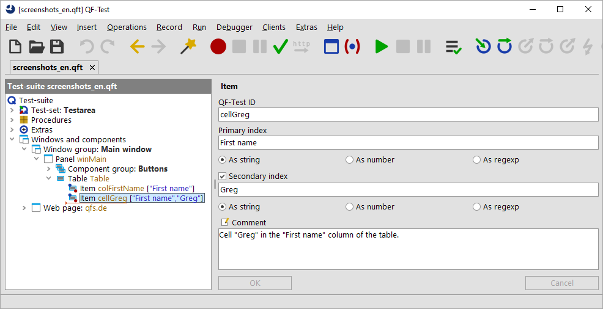

| Version 6.0.3 |
In QF-Test it is possible to address components in relation to a parent component. This is most interesting if the child component can only be unequivocally addressed in combination with its parent. There are various usage scenarios for this and also various ways to implement.
With tables, lists, and trees it makes sense to use an index for sub-items. The main component is specified via the 'QF-Test component ID' or a SmartID. The index for the sub-item is appended.
Examples:
listid@Entry,
#Table@Column Heading&5
If the main component is addressed via a SmartID,
tabs in a TabPanel or list items of a ComboBox
can be referenced simplified.
Examples #Tab:Tab1, #Item:EntryX
More information can be found in Addressing via index.
SmartIDs can be attached to the 'QF-Test component ID' or to the SmartID identifying the parent component.
As divider between parent and child component, @ is used.
The nesting can also be multi-level.
The individual components can also be given an index.
Examples:
#Dialog:@#OK,
comboboxid@#Button:,
#Table:&0&0@#CheckBox:.
A QPath can be used simliarly to the attached SmartID,
but is not as powerful as it by far.
A QPath can be attached to a 'QF-Test component ID'.
As divider, @ is used.
The 'QF-Test component ID' can also be given an index.
Examples: buttonid@:Icon, tableid&0&0@:CheckBox
More information can be found in Addressing via QPath.
With web applications, an XPath and/or a CSS-Selektor
can also be appended to a 'QF-Test component ID' or a SmartID.
As divider @:xpath= or @:css= is used.
The 'QF-Test component ID' can also be given an index.
Example: genericDocument@:xpath=${quoteitem:$(xpath)}
More information can be found in Addressing via XPath and/or CSS selectors.
The parent component can also be specified via a scope, see Scope (Preview).
In the case of tables, lists and trees it can also make sense to record the sub-item as 'Item' node. It depends on the situation if a sub-item is addressed via index or if it makes more sense to record it. You can use both methods as preferred and even combine them. The rule of thumb is that an 'Item' node is better for components with few, constant elements, like columns of a table or tabs in a tab panel. The syntax is preferrable if QF-Test variables are used in indexes or if the names of elements vary or are editable. The option Sub-item type determines if QF-Test creates 'Item' nodes during recording or uses the 'QF-Test ID' syntax. With the default setting "Intelligent", QF-Test follows the rules above.
More information about recording sub-items can be found in Addressing via 'Items' nodes.
Note: In the following listing, the SmartID of the parent component may already consist of nested references.
|
|
|
|||||||||||||||||||||||||||||||||||
|
| Table 5.1: Addressing sub-items | |||||||||||||||||||||||||||||||||||
The sub-item is described using a special syntax. The 'QF-Test component ID' which is used in the test is comprised of the 'QF-Test ID' or the SmartID of the complex component (tree, table, etc.), followed by a special separator and the index of the sub-item. The kind of separator determines if the index is numeric, textual, or a regular expression (see section 45.3):
|
|
|
||||||||||
|
| Table 5.2: Separator and index format for accessing sub-items | ||||||||||
To access a table cell with 'Primary index' and 'Secondary index', simply append another separator, followed by the second index. The two indices can be in different formats.
Note The special meaning of the separators '@', '&' and '%' makes them special characters which must be escaped if they appear in a name itself. More about this topic can be found in section 45.5.
It is almost always possible to start the count from the back with a negative index.
Table component
with the 'QF-Test ID' table
and you want to replay a mouse click
on the cell in the 6th row of the column "Name",
create a 'Mouse event'
and set the 'QF-Test component ID' attribute to table@Name&5.
listid&0 addresses the furst entry of a list by numeric index.
The list itself was recorded as component.
#listname@Europe addresses the entry with the text "Europe".
The list itself is referenced via its identifier in a SmartID.
#Tree:@/Root/Branch1/Branch1-2/Leaf addresses a tree path
specified by the texts of each tree node.
#Tree:%/W.*/A.*1/A.*\d-\d/B.* addresses a tree path
specified by regular expressions for each tree node.
#Tree&/0/5/1/3/ addresses a tree path
specified by numeric indexes for each tree node.
table&-1&-1 addresses the last cell in the rightmost table column.
With SmartIDs, tabs in tab panels must be addressed according to the syntax above,
for example by #TabPanel:@Tab1,
whereby Tab1 is the name of the tab.
Alternatively, the shortcut #Tab:Tab1 can be used here.
If no other component has the SmartID #Tab1,
the tab can eben be addressed by #Tab1.
If a combo box list is opened, the list entries can be addressed according to the syntax above
by #List:@EntryX.
As a shortcut, #Item:EntryX is also possible.
Both shortcuts are very comfortable, but the high flexibility has its price in performance. How high it ends up depends on many factors, so the decision between comfort and performance must be made on a case-by-case basis.
Each 'QF-Test component ID' attribute in an event or check node (with or without sub-item)
can be appended one or more indexes in the form of @:ClassName<idx>,
whereby <idx> is optional.
This instructs QF-Test to first determine the target component (and if needed the sub-item)
for the part of the 'QF-Test component ID' attribute in front of the @:
and then to search for visible components of class ClassName within.
If <idx> is specified, this is interpreted as 0-based index of the list of visible candidates. No <idx> is equivalent to <0>.
The QPath syntax expects a generic class after the @:.
An overview over generic classes can be found in section 57.1.
If the component cannot be recorded with a generic class, the QPath must contain the complete class name.
In JavaFX for example, some of them are called ImageView, VBox, GridPane, or BorderPane.
The following example references the second ImageView on the third position of a list:
panelSecond.list&3@:javafx.scene.image.ImageView<1>
XPath and CSS selectors are standardised formats for addressing elements in web browsers. (Official specifications: www.w3.org/TR/xpath and www.w3.org/TR/css3-selectors).
QF-Test supports addressing components via XPaths and CSS selectors for web elements, to allow for easier migration of existing web tests of other tools into QF-Test.
There are already a lot of tutorials on the internet on how to address elements with CSS selectors (for example w3schools CSS Selector Reference) and with XPaths (for example w3schools XPath Syntax). Because of this, the peculiarities of these ways of addressing components are not described here.
Use in the QF-Test ID
Assuming that a web component is to be recognized in QF-Test using the XPath "$(xpath)" or a CSS selector "$(css)", this can be done in several ways. The easiest/fastest way is usually to specify the XPath or the CSS selector in the 'QF-Test component ID' attribute of any event node. The following syntax is used for this:
genericHtml@:xpath=${quoteitem:$(xpath)}
genericHtml@:css=${quoteitem:$(css)}
Or to the same effect:
genericDocument@:xpath=${quoteitem:$(xpath)}
genericDocument@:css=${quoteitem:$(css)}
The syntax can be nested as needed. For example, you can use:
genericDocument@:xpath=${quoteitem:$(xpath)}@:css=${quoteitem:$(css)}
to direct QF-Test to first search for a component using an XPath and then search for a child component using a CSS selector.
Note
Please note that the @:xpath/@:css syntax
understandably expects the given XPath/CSS statement to return a single component.
Using an XPath which returns a number (for example count(.//input[@id!='Google']))
or a boolean (for example nilled($in-xml//child[1]))
can lead to unexpected behavior.
Use in scripts
The rc module in SUT scripts also allows to find web components via XPath or CSS selectors.
|
|
|
|||
|
| Example 5.2: Finding components by XPath or CSS selectors in scripts | |||
To use an XPath which does not return any component(s), please use the evalJS method:
|
|
|
|||
|
| Example 5.3: Executing an XPath statement which does not return a component | |||
Use in component nodes
Inside a component node QF-Test can also be instructed to use an XPath or CSS selector for component recognition. To do this, specify a recognition criterium like the following in "Extra features":
|
|
|
||||||||||||
|
| Figure 5.11: Extra feature attribute for component recognition via XPath or CSS selector. | ||||||||||||
An 'Item' is defined by two things: The component it belongs to
and an index inside the component.
The parent node of the 'Item' defines the component.
The index can be either a number or a text.
Numeric indexes start with 0.
For example, in a JList component the element with index 1
corresponds to the second list entry.
For trees, simple numeric indexes are almost useless,
since by opening and closing branches, the indexes of all nodes below are changed.
A text index defines an element by the text it displays in the interface.
a list item called "Entry1" in a JList component
would be recorded with the text index "Entry1".
The textual representation is more flexible than the numeric one,
but can cause problems if the displayed texts of the elements in a component are not unique.
In these cases, the first matching element is selected.
A text index can also be a regular expression (see section 45.3).
In this case, the first element matching the expression is selected.
The option Sub-item format determines which format is used during element recording.
Almost all kinds of 'Item' have only one index.
This is not sufficient for the cell of a JTable component,
since tables are two-dimensional structures.
Two indexes are needed to exactly describe a cell.
The first, the 'Primary index', determines the table column,
the second, the 'Secondary index', the row.
|
|  | ||
|
| Figure 5.12: An 'Item' for a table cell | ||
Tree nodes also occupy a special position. As described above, the hierarchical structure cannot be easily mapped to a linear structure. In addition, tree nodes with the same names often occur in trees. If, on the other hand, the direct and indirect parent nodes are included in the name, uniqueness can usually be achieved.
QF-Test uses a special syntax to represent tree nodes. An index starting with a '/' character is interpreted as a path index. Just think of a file system: The file named "/tmp/file1" can either be represented flat as "file1", which can lead to conflicts with other files named "file1" in other directories. Alternatively, the full and unique path "/tmp/file1" can be used. QF-Test also supports numeric indexes with this syntax: A numeric index of the form "/2/3" denotes the fourth child node of the third child node of the root node. A combined form to address the third node in the "tmp" node using "/tmp/2", for example, is currently not possible.
Note This special syntax makes '/' a special character for 'Items' in a tree component. If this character appears in a name itself, it therefore must be escaped. More about this topic can be found in section 45.5.
Everything said in section 5.5 about the 'QF-Test ID' attribute of 'Components' also applies to the 'QF-Test ID' attribute of an 'Item'. This attribute must be unique and is referenced by events and checks.
When QF-Test automatically assigns the 'QF-Test ID' of an 'Item', it creates it by taking the 'QF-Test ID' of the 'Component' of the parent node and appending the index (or indexes). This kind of 'QF-Test ID' is normally well readable and understandable. Unfortunately, it also is the source of a frequent misunderstanding: If you want to change the index of a recorded 'Item' to refer to another element, you must not change the attribute 'QF-Test component ID' of the node which refers to it. Instead you must change the 'Primary index' of the 'Item' node.
| Last update: 9/6/2022 Copyright © 1999-2022 Quality First Software GmbH |